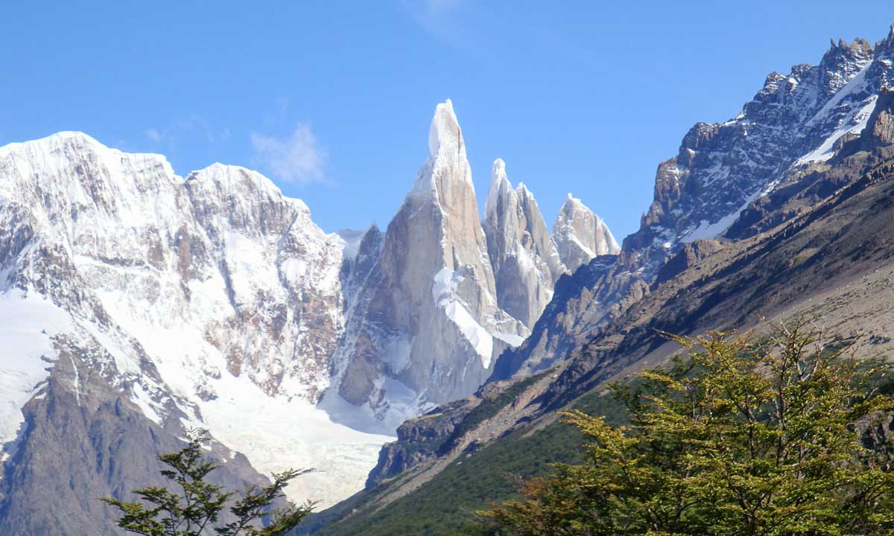
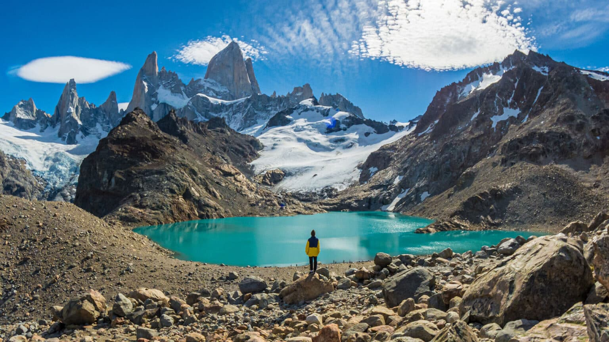
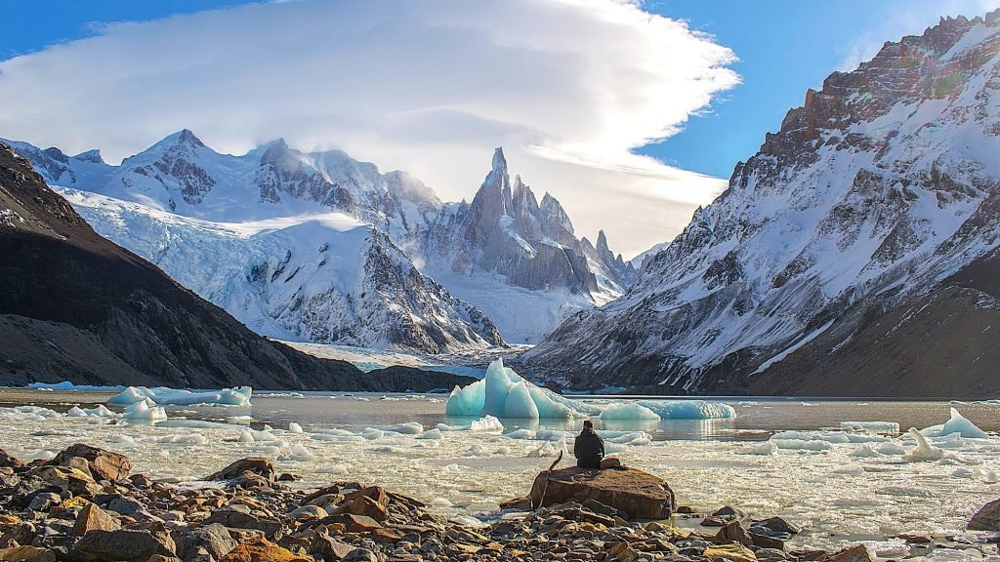
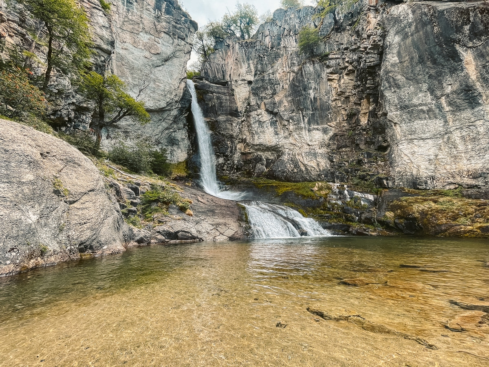
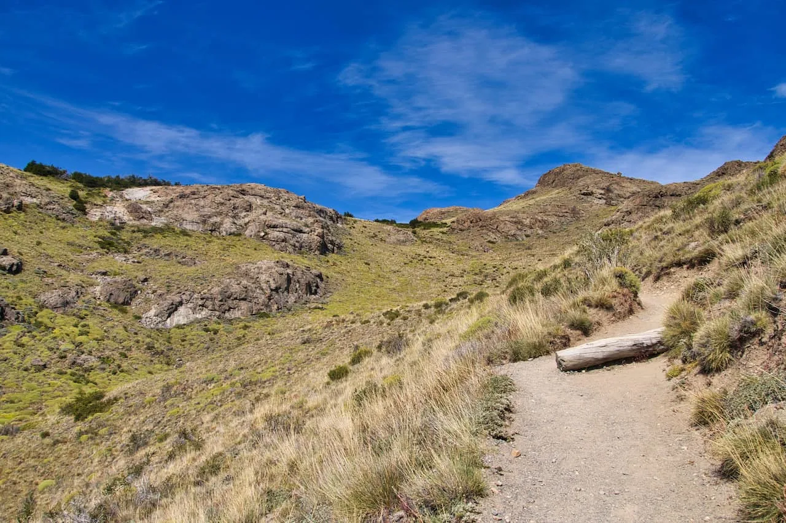

Founded in 1985 specifically to secure the border with Chile.
Experince Trekking in El Chaltén

Known as the "Trekking Capital of the World," it offers world-class hiking trails at the foot of Mount Fitz Roy.
It’s the youngest town in Argentina (founded in 1985!), but the granite peaks like Fitz Roy are over 100 million years old. They are incredibly difficult to climb because of the verticality and the 'Roaring Forties' winds.
The granite here is so hard because it cooled slowly underground before being pushed up. It’s "Grade A" climbing rock.
It went from a "secret" spot to a viral TikTok destination. The park service had to implement strict "No Trace" rules recently to handle the 300% increase in hikers since 2015.
What to Expect
Incredible pink sunrises hitting the granite peaks of Fitz Roy and some of the world's cleanest glacial drinking water.
THE "HOLY GRAIL" CHALLENGE: Laguna de los Tres

The Mission: A 22km round-trip pilgrimage to the base of the mighty Mount Fitz Roy.
You’ll witness a "Geological Cathedral." The final kilometer is a brutal 400 meter vertical gain—physics' way of making you earn the view.
A turquoise lagoon fed by ancient snow, framed by three massive granite spires that pierce the clouds.
Pro-Tip: Start at 4:00 AM. When the sun hits those peaks, the "Alpenglow" effect turns the granite into burning neon pink.
THE "ICEBERG SYMPHONY": Laguna Torre

The Mission: A moderate, 18km trek through enchanted Lenga forests.
Reach the shores of a glacial lake where Cerro Torre—the world's most difficult needle-peak—looms overhead.
Watch "Iceberg Regattas." Massive chunks of the Grande Glacier break off and float right to the shore. You can literally touch the Pleistocene era!
THE "QUICK-HIT" WONDER: Chorrillo del Salto

The Mission: An easy 3km stroll for when your quads need a "recovery day."
A 20-meter vertical waterfall hidden in a micro-forest. It’s a perfect study in Hydrology and Erosion.
Pristine white water crashing against dark volcanic rock. It’s the ultimate Zen break before your next big climb.
THE "CONDOR'S VIEW": Los Cóndores & Las Águilas

The Mission: A short, steep 1-hour burst from the town center.
A 360-degree panoramic "Map View" of the entire valley.
If you’re lucky, you’ll see the Andean Condor (wingspan of $3\text{ meters!}$) using thermal updrafts to soar without flapping a single wing.
Warning:
The Patagonian weather is a chaotic system! You can experience four seasons in forty minutes. Pack layers, respect the wind, and prepare for a spiritual upgrade.